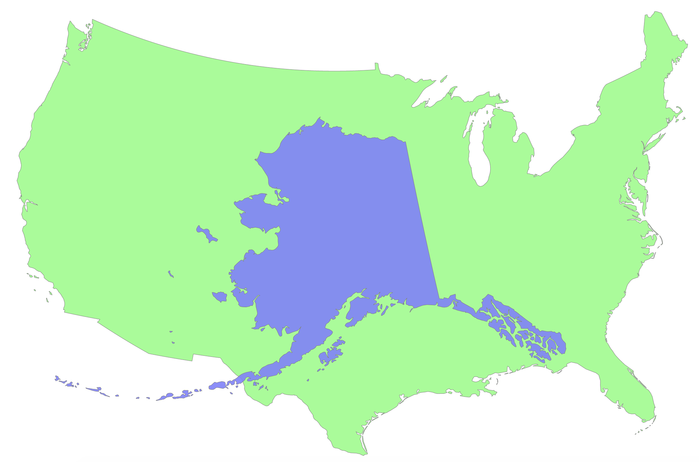
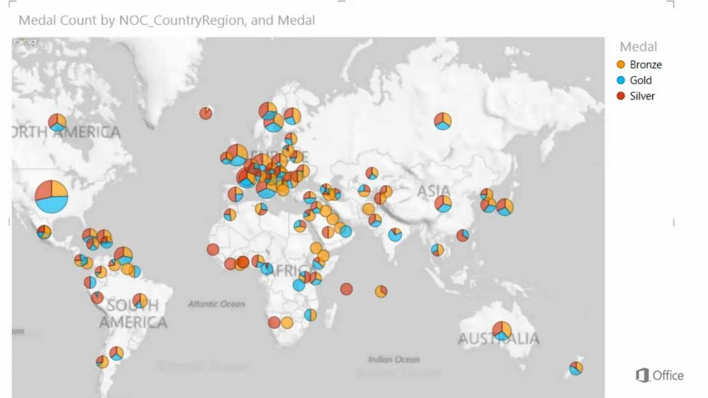
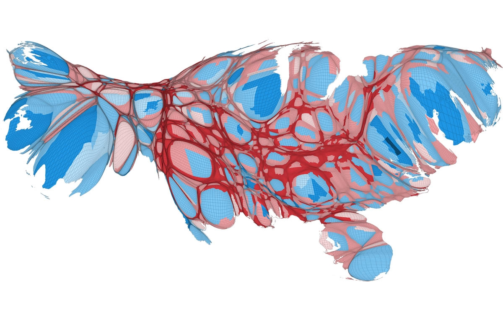

Maps
Using maps for visualizations is unique because of the need to translate
a spherically shaped object onto a 2 dimensional screen or sheet of paper.
One of the largest mistakes is choosing the wrong type of projection. Because
different projects stretch and distort land masses different ways, areas and
sizes can be misleading, especially on the Mercator projection.


In the first map, Alaska looks about as big as half of the continential US,
but comparing the true land area shows that while it is still very large,
it is not quite that large. If the visualization wants to, for example,
display the area deserts in the world and Alaska had a large proportion
of land where a desert existed, the type of map would need to display
area correctly to not overstate the land area with deserts present.
The second mistake that is easy to make is overlapping points with point
data maps. If many points overlap and contain distinct information, it might
be difficult to understand the map correctly.

The map above shows the same type of information for each country, but
overlaps many of the European countries so much that no information can really
be gathered from this visualization in that part of the world. A better solution would
be to use a cartogram, so that no countries overlap but also the proportionality of the sizes
of the points can be used as well.
Another mistake that can be made with map visualizations is distorting the map
based on data so that it is hard to gain any insight from it.

In this map it is very hard to even see that it is a map of the United States.
Even when you know that it is a map of the US, it is hard to distinguish
where states or distinguishable areas lie. Sometimes it would be easier to work
with more abstract shapes like circles or rectangles than distort a more accurate
map so that nothing can be taken from it.